Tolak Date Tidak Valid (Reject Invalid Dates)
Di luar Rentang Date | Minggu dan Sabtu
Contoh ini mengajarkan Anda bagaimana menggunakan Data Validation untuk menolak tanggal yang tidak valid.
1. Pilih range A2:A4.
2. Pada tab Data, dalam grup Data Tools, klik Data Validation.

Di luar Rentang Date (Outside a Date Range)
3. Dalam daftar Allow, klik Date.
4. Dalam daftar Data, klik between.
5. Masukkan Start date dan End date yang ditunjukkan di bawah ini dan klik OK.
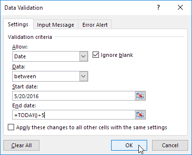
Penjelasan: semua tanggal antara 20/5/2016 dan tanggal hari ini + 5 hari diperbolehkan. Semua tanggal di luar range tanggal ini ditolak.
6. Masukkan tanggal 19/5/2016 ke dalam sel A2.
Hasil. Excel menunjukkan peringatan error.
Catatan: untuk memasukkan pesan input dan pesan peringatan error, buka tab Input Message dan Error Alert.
Minggu dan Sabtu (Sundays and Saturdays)
3. Dalam daftar Allow, klik Custom.
4. Di kotak Formula, masukkan rumus yang ditunjukkan di bawah ini dan klik OK.
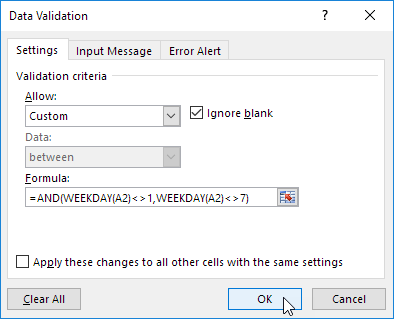
Penjelasan: fungsi WEEKDAY mengembalikan angka dari 1 (Minggu) hingga 7 (Sabtu) yang mewakili hari dalam seminggu dari suatu tanggal. Jika hari kerja tanggal tidak sama dengan 1 (Minggu) DAN tidak sama dengan 7 (Sabtu), tanggal diperbolehkan (<> berarti tidak sama dengan). Dengan kata lain, Senin, Selasa, Rabu, Kamis dan Jumat diperbolehkan. Minggu dan Sabtu ditolak. Karena kami memilih range A2:A4 sebelum kami mengklik Data Validation, Excel secara otomatis menyalin rumus ke sel lain.
5. Untuk memeriksa ini, pilih sel A3 dan klik Data Validation.
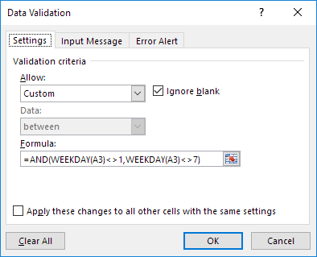
Seperti yang Anda lihat, sel ini juga berisi rumus yang benar.
6. Masukkan tanggal 27/8/2016 (Saturday) ke sel A2.
Hasil. Excel menunjukkan peringatan error.
Catatan: untuk memasukkan pesan input dan pesan peringatan error, buka tab Input Message dan Error Alert.
Batas Anggaran (Budget Limit)
Contoh ini mengajarkan Anda cara menggunakan Data Validation untuk mencegah pengguna melebihi batas anggaran.
1. Pilih range B2:B8.
Catatan: sel B10 berisi fungsi SUM yang menghitung jumlah range B2:B8.
2. Pada tab Data, dalam grup Data Tools, klik Data Validation.
3. Dalam daftar Allow, klik Custom.
4. Di kotak Formula, masukkan rumus yang ditunjukkan di bawah ini dan klik OK.
Penjelasan: jumlah range B2:B8 tidak boleh melebihi batas anggaran $100. Oleh karena itu, kami menerapkan Data Validation ke range B2:B8 (bukan sel B10!) karena di sinilah nilai dimasukkan. Karena kami memilih range B2:B8 sebelum kami mengklik Data Validation, Excel secara otomatis menyalin rumus ke sel lain. Perhatikan bagaimana kami membuat referensi absolut ($B$2:$B$8) untuk memperbaiki referensi ini.
5. Untuk memeriksa ini, pilih sel B3 dan klik Data Validation.
Seperti yang Anda lihat, sel ini juga berisi rumus yang benar.
6. Masukkan nilai 30 ke dalam sel B7.
Hasil. Excel menunjukkan peringatan error. Anda tidak dapat melebihi batas anggaran Anda sebesar $100.
Catatan: untuk memasukkan pesan peringatan error, buka tab Error Alert.
Cegah Entri Duplikat (Prevent Duplicate Entries)
Contoh ini mengajarkan Anda cara menggunakan Data Validation untuk mencegah pengguna memasukkan nilai duplikat.
1. Pilih range A2:A20.
2. Pada tab Data, dalam grup Data Tools, klik Data Validation.
3. Dalam daftar Allow, klik Custom.
4. Di kotak Formula, masukkan rumus yang ditunjukkan di bawah ini dan klik OK.
Penjelasan: Fungsi COUNTIF membutuhkan dua argumen. =COUNTIF($A$2:$A$20,A2) menghitung jumlah nilai dalam range A2:A20 yang sama dengan nilai di sel A2. Nilai ini hanya dapat muncul sekali (=1) karena kami tidak ingin entri duplikat. Karena kami memilih range A2:A20 sebelum kami mengklik Data Validation, Excel secara otomatis menyalin rumus ke sel lain. Perhatikan bagaimana kami membuat referensi absolut ($A$2:$A$20) untuk memperbaiki referensi ini.
5. Untuk memeriksa ini, pilih sel A3 dan klik Data Validation.

Seperti yang Anda lihat, fungsi ini menghitung jumlah nilai dalam range A2:A20 yang sama dengan nilai di sel A3. Sekali lagi, nilai ini hanya dapat muncul sekali (=1) karena kami tidak ingin entri duplikat.
6. Masukkan nomor faktur duplikat.
Hasil. Excel menunjukkan peringatan error. Anda telah memasukkan nomor invoice number.
Catatan: untuk memasukkan pesan input dan pesan peringatan error, buka tab Input Message dan Error Alert.
Kode Produk (Product Codes)
Contoh ini mengajarkan Anda cara menggunakan Data Validation untuk mencegah pengguna memasukkan kode produk yang salah.
1. Pilih range A2:A7.
2. Pada tab Data, dalam grup Data Tools, klik Data Validation.
3. Dalam daftar Allow, klik Custom.
4. Di kotak Formula, masukkan rumus yang ditunjukkan di bawah ini dan klik OK.
Penjelasan: fungsi AND ini memiliki tiga argumen. LEFT(A2)="C" memaksa pengguna untuk memulai dengan huruf C. LEN(A2)=4 memaksa pengguna untuk memasukkan string dengan panjang 4 karakter. ISNUMBER(VALUE(RIGHT(A2,3))) memaksa pengguna untuk mengakhiri dengan 3 angka. RIGHT(A2,3) mengekstrak 3 karakter paling kanan dari string teks. Fungsi VALUE mengonversi string teks ini menjadi angka. ISNUMBER memeriksa apakah nilai ini adalah angka. Fungsi AND mengembalikan TRUE jika semua kondisi benar. Karena kami memilih range A2:A7 sebelum kami mengklik Data Validation, Excel secara otomatis menyalin rumus ke sel lain.
5. Untuk memeriksa ini, pilih sel A3 dan klik Data Validation.

Seperti yang Anda lihat, sel ini juga berisi rumus yang benar.
6. Masukkan kode produk yang salah.
Hasil. Excel menunjukkan peringatan error.
Catatan: untuk memasukkan pesan input dan pesan peringatan error, buka tab Input Message dan Error Alert.
Daftar Drop-down
Buat List Drop-down | Ijinkan Entri Lainnya | Tambah/Hapus Item | List Drop-down Dinamis | Hapus List Drop-down | List Drop-down Dependen | Table Magic
List drop-down di Excel sangat membantu jika Anda ingin memastikan bahwa pengguna memilih item dari daftar, daripada mengetik nilainya sendiri.
Buat List Drop-down
Untuk membuat daftar drop-down di Excel, jalankan langkah-langkah berikut.
1. Pada lembar kedua, ketik item yang ingin Anda tampilkan di daftar drop-down.
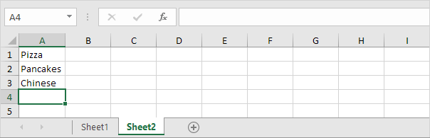
Catatan: jika Anda tidak ingin pengguna mengakses item di Sheet2, Anda dapat menyembunyikan Sheet2. Untuk mencapai ini, klik kanan pada tab lembar Sheet2 dan klik Hide.
2. Pada lembar pertama, pilih sel B1.

3. Pada tab Data, dalam grup Data Tools, klik Data Validation.
Kotak dialog 'Data Validation' muncul.
4. Dalam kotak Allow, klik List.
5. Klik di kotak Source dan pilih range A1:A3 pada Sheet2.

6. Klik Oke.
Hasil:
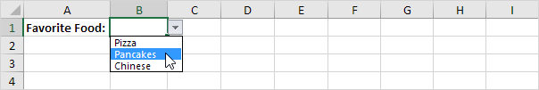
Catatan: untuk menyalin/menempelkan daftar drop-down, pilih sel dengan daftar drop-down dan tekan Ctrl+C, pilih sel lain dan tekan Ctrl+V.
7. Anda juga dapat mengetikkan item secara langsung ke dalam kotak Source, daripada menggunakan referensi range.
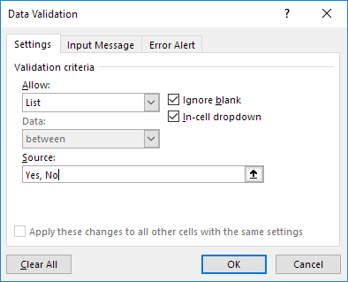
Catatan: ini membuat daftar drop-down Anda peka huruf besar/kecil. Misalnya, jika pengguna mengetik ya, peringatan error akan ditampilkan.
Ijinkan Entri Lainnya
Anda juga dapat membuat daftar drop-down di Excel yang memungkinkan entri lain.
1. Pertama, jika Anda mengetikkan nilai yang tidak ada dalam daftar, Excel akan menampilkan peringatan error.

Untuk mengizinkan entri lain, jalankan langkah-langkah berikut.
2. Pada tab Data, dalam grup Data Tools, klik Data Validation.
Kotak dialog 'Data Validation' muncul.
3. Pada tab Error Alert, hapus centang 'Show error alert after invalid data is entered'.

4. Klik Oke.
5. Sekarang Anda dapat memasukkan nilai yang tidak ada dalam daftar.
Tambah/Hapus Item
Anda dapat menambah atau menghapus item dari daftar drop-down di Excel tanpa membuka kotak dialog 'Data Validation' dan mengubah referensi range. Ini menghemat waktu.
1. Untuk menambahkan item ke daftar drop-down, buka item dan pilih item.
2. Klik kanan, lalu klik Insert.

3. Pilih "Shift cell down" dan klik OK.
Hasil:
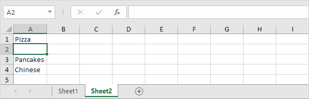
Catatan: Excel secara otomatis mengubah referensi range dari Sheet2!$A$1:$A$3 menjadi Sheet2!$A$1:$A$4. Anda dapat memeriksanya dengan membuka kotak dialog 'Data Validation'.
4. Ketik item baru.
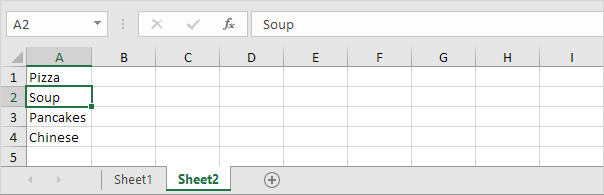
Hasil:

5. Untuk menghapus item dari daftar drop-down, pada langkah 2, klik Hapus, pilih "Shift cells up" dan klik OK.
Daftar Drop-down Dinamis
Anda juga dapat menggunakan rumus yang memperbarui daftar turun bawah secara otomatis saat Anda menambahkan item ke akhir daftar.
1. Pada lembar pertama, pilih sel B1.
2. Pada tab Data, dalam grup Data Tools, klik Data Validation.
Kotak dialog 'Data Validation' muncul.
3. Dalam kotak Allow, klik List.
4. Klik di kotak Source dan masukkan rumus: =OFFSET(Sheet2!$A$1,0,0,COUNTA(Sheet2!$A:$A),1)
Penjelasan: fungsi OFFSET membutuhkan 5 argumen. Referensi: Sheet2!$A$1, baris untuk diimbangi: 0, kolom untuk diimbangi: 0, tinggi: COUNTA(Sheet2!$A:$A) dan lebar: 1. COUNTA(Sheet2!$A:$A) menghitung angka nilai di kolom A pada Sheet2 yang tidak kosong. Saat Anda menambahkan item ke daftar di Sheet2, COUNTA(Sheet2!$A:$A) meningkat. Akibatnya, range yang dikembalikan oleh fungsi OFFSET meluas dan daftar drop-down akan diperbarui.
5. Klik Oke.
6. Pada lembar kedua, cukup tambahkan item baru ke akhir daftar.
Hasil:
Hapus List Drop-down
Untuk menghapus daftar drop-down di Excel, jalankan langkah-langkah berikut.
1. Pilih sel dengan daftar drop-down.

2. Pada tab Data, dalam grup Data Tools, klik Data Validation.
Kotak dialog 'Data Validation' muncul.
3. Klik Clear All.

Catatan: untuk menghapus semua daftar drop-down lainnya dengan pengaturan yang sama, centang Apply these changes to all other cells with the same settings
sebelum Anda mengklik Clear All.
4. Klik Oke.
Daftar Drop-down Dependen
Ingin mempelajari lebih lanjut tentang daftar drop-down di Excel? Pelajari cara membuat daftar drop-down dependen.
1. Misalnya, jika pengguna memilih Pizza dari daftar drop-down pertama.

2. Daftar drop-down kedua berisi item Pizza.
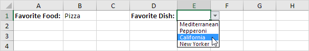
3. Tetapi jika pengguna memilih Chinese dari daftar drop-down pertama, daftar drop-down kedua berisi masakan Chinese.

Table Magic
Anda juga dapat menyimpan item Anda dalam tabel Excel untuk membuat daftar drop-down dinamis.
1. Pada lembar kedua, pilih item daftar.
2. Pada tab Insert, dalam group Tables, klik Table.
3. Excel secara otomatis memilih data untuk Anda. Klik Oke.

4. Jika Anda memilih daftar, Excel menampilkan referensi terstruktur.

5. Gunakan referensi terstruktur ini untuk membuat daftar drop-down dinamis.

Penjelasan: fungsi INDIRECT di Excel mengubah string teks menjadi referensi yang valid.
6. Pada lembar kedua, cukup tambahkan item baru ke akhir daftar.
Hasil:
7. Saat menggunakan tabel, gunakan fungsi UNIQUE di Excel 365 untuk mengekstrak item daftar unik.

Catatan: fungsi array dinamis ini, dimasukkan ke dalam sel F1, mengisi beberapa sel. Wow! Perilaku ini di Excel 365 disebut spill.
8. Gunakan range spill ini untuk membuat daftar magic drop-down.
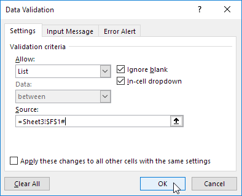
Penjelasan: selalu gunakan sel pertama (F1) dan karakter hash untuk merujuk ke range spill.
Hasil:

Catatan: saat Anda menambahkan catatan baru, fungsi UNIQUE secara otomatis mengekstrak item daftar unik baru dan Excel secara otomatis memperbarui daftar turun bawah.
Daftar Drop-down Dependen
Contoh ini menjelaskan cara membuat daftar drop-down dependen di Excel. Inilah yang kami coba capai:
Pengguna memilih Pizza dari daftar drop-down.
Akibatnya, daftar drop-down kedua berisi item Pizza.
Untuk membuat daftar drop-down dependen ini, jalankan langkah-langkah berikut.
1. Pada lembar kedua, buat nama range berikut.
| Nama | Range Address |
|---|---|
| Food | A1:A3 |
| Pizza | B1:B4 |
| Pancakes | C1:C2 |
| Chinese | D1:D3 |
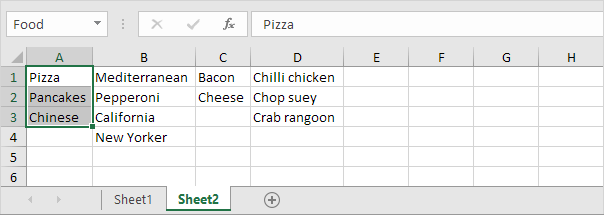
2. Pada lembar pertama, pilih sel B1.
3. Pada tab Data, dalam grup Data Tools, klik Data Validation.
Kotak dialog 'Data Validation' muncul.
4. Dalam kotak Allow, klik List.
5. Klik di kotak Source dan ketik =Food.
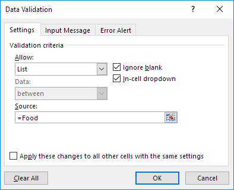
6. Klik Oke.
Hasil:

7. Selanjutnya, pilih sel E1.
8. Dalam kotak Allow, klik List.
9. Klik di kotak Source dan ketik =INDIRECT($B$1).

10. Klik Oke.
Hasil:
Penjelasan: fungsi INDIRECT mengembalikan referensi yang ditentukan oleh string teks. Misalnya, pengguna memilih Chinese dari daftar drop-down pertama. =INDIRECT($B$1) mengembalikan referensi Chinese. Hasilnya, daftar drop-down kedua berisi item Chinese.
Cm ke Inci
1 cm = 0,3937 inci dan 1 inci = 2,54 cm. Gunakan rumus sederhana, fungsi CONVERT atau unduh pengonversi satuan gratis kami untuk mengonversi dari cm ke inci atau sebaliknya (lihat di bawah).
1. Pertama, untuk mengubah dari centimeter ke inci, bagi dengan 2,54. Rumus sederhana di bawah ini berhasil.
2. Untuk mengonversi dari inci ke centimeter, kalikan dengan 2,54.
3. Anda juga dapat menggunakan fungsi CONVERT di Excel untuk mengonversi dari centimeter ke inci.
Catatan: fungsi CONVERT memiliki tiga argumen (angka, dari_unit dan ke_unit).
4. Anda juga dapat menggunakan fungsi CONVERT di Excel untuk mengonversi dari inci ke centimeter.
5. Pilih Length dari daftar drop-down kategori.
Penjelasan: karena Anda memilih Length dari daftar drop-down ini, daftar drop-down dependen di sel B5 dan sel E5 sekarang berisi satuan panjang.
6. Masukkan angka dan pilih satuan panjang yang benar.
Penjelasan: konverter unit menggunakan perubahan lembar kerja untuk mengeksekusi kode VBA secara otomatis saat Anda mengubah sel (B2, B4, B5, E4 atau E5). Kode VBA menggunakan fungsi CONVERT untuk mengonversi dari satu unit pengukuran ke unit lainnya dan menggunakan fungsi VLOOKUP untuk mencari singkatan unit yang benar (cm, in, yd, ft, dll.) yang disimpan di lembar kerja kedua.
Kg ke Lbs
1 kg = 2.20462 lbs (pound) dan 1 lb (pound) = 0.45359 kg. Gunakan rumus sederhana, fungsi CONVERT atau unduh pengonversi satuan gratis kami untuk mengonversi dari kg ke lbs atau sebaliknya (lihat di bawah).
1. Pertama, untuk mengonversi dari kg ke lbs, kalikan dengan 2.20462. Rumus sederhana di bawah ini berhasil.

2. Untuk mengkonversi dari lbs ke kg, bagi dengan 2.20462.
3. Anda juga dapat menggunakan fungsi CONVERT di Excel untuk mengonversi dari kg ke lbs.
Catatan: fungsi CONVERT memiliki tiga argumen (angka, dari_unit dan ke_unit). Satuan singkatan lbm adalah singkatan dari pound mass.
4. Anda juga dapat menggunakan fungsi CONVERT di Excel untuk mengonversi dari lbs ke kg.
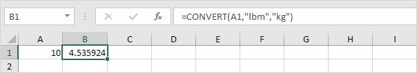
5. Pilih Mass dari daftar drop-down kategori.

Penjelasan: karena Anda memilih Mass dari daftar drop-down ini, daftar drop-down dependen di sel B5 dan sel E5 sekarang berisi satuan massa.
6. Masukkan nomor dan pilih satuan massa yang benar.

Penjelasan: konverter unit menggunakan perubahan lembar kerja untuk mengeksekusi kode VBA secara otomatis saat Anda mengubah sel (B2, B4, B5, E4 atau E5). Kode VBA menggunakan fungsi CONVERT untuk mengonversi dari satu unit pengukuran ke unit lainnya dan menggunakan fungsi VLOOKUP untuk mencari singkatan unit yang benar (kg, g, lbm, ozm, dll.) yang disimpan di lembar kerja kedua.